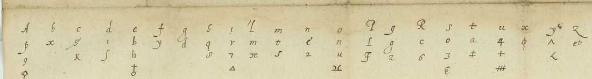
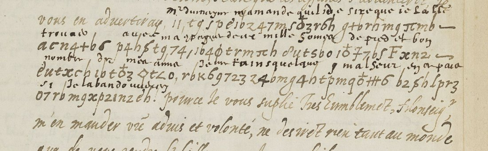
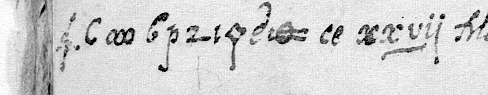
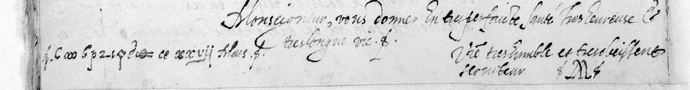

At a glanceRead · 26 of 27 cipher units
- The letters
- A correspondent at Randan in Auvergne to Louis de Gonzague, duc de Nevers, 27 March and 4 April 1587. Clear French with seven cipher items: four code numbers, a place name and one short run.
- Where
- BnF français 3975 ff. 28 and 30, DECODE R4285 and R4286. Listed as non-decrypted, sender unknown, origin given as Rome.
- The cipher
- A substitution of letters, figures and symbols, with capitals for some words and code numbers for names.
- How it was read
- Two words glossed at the time matched key no. 11 of Nevers’s key book (fr. 3995 f. 23). A third letter from the same writer in fr. 3413, with an interlinear decipherment, showed how he drew the signs.
- What it says
- The codes name the marquis, M. d’Entragues, the queen of Navarre and the duc d’Épernon. The run reads “passant pres Lyon et ce pais”, and the first letter is dated from Randan, not Rome.
- Still open
- One sign in the run, taken as a null against its key value. The writer is unnamed, though the comte de Randan is the obvious candidate.
- Credit
- Tomokiyo noted that key no. 11 is used in the fr. 3413 letter, which he assigned to the cardinal de Guise. It is shown here to be this correspondent’s.
01 The two letters and the key
Fr. 3975 is a volume of the Nevers papers for 1587 in the Collection Mémoires de la Ligue, on Gallica as btv1b90605473. The BnF’s piece-by-piece notice lists f. 28 as no. 7, “Lettre avec chiffrement et déchiffrement adressée à M. le duc de Nevers pour lui rendre compte d’un voyage à Lyon. Ce XXVII mars 1587”, and f. 30 as no. 8, “Lettre adressée par le même correspondant et sur le même sujet”, 4 April. Both are signed with the same monogram and written in a hand that fills its line ends with a long s. Nothing on the leaves says where the writer was. DECODE’s “Rome” seems to be borrowed from a neighbouring piece (no. 13, the marquis Malatesta, Di Roma).
- f. 28r–v, 27 March (R4285): code numbers 94, 6 and 23, each followed by the key’s virgule, and a ten-sign place name before the clear “ce xxvij Mars”.
- f. 30r, 4 April (R4286): code 45 and one run of thirteen signs. A contemporary hand glossed the code and the first four signs of the run.

The key is no. 11 in Tomokiyo’s catalogue of the Nevers key book, BnF fr. 3995 f. 23 (Gallica btv1b525085665, view 52). It has an alphabet of two to four signs per letter, capitals for twenty-two small words (C = de, F = et, K = me, M = avec…), and some hundred names and words written as a figure or letter followed by a virgule. The instruction on the sheet: “L’on pourra se servir de toutes sortes de caractaires que l’on voudra faire a plaisir avec ceulx qui sont dans ce chiffre, lesquelz serviront de nulles”, so invented signs are nulls. The name list leans south and to Auvergne: St Vidal, Mandelot, Maugiron, Randan, the grand prieur, the comte de Sault, the bishop of Clermont. The full table is in nevers1587/key.md.

02 The letter from Clermont that taught the hand
Straight from the table, the codes read at once and so did the glossed Lyon (π ^ ꭓ é = l y o n). The rest did not: “… a p c e t a i s”, and a dateline of “r a q …”. Enumerating every value and null against a French language model, and allowing one or two scribal slips, produced nothing convincing.
Tomokiyo notes that key no. 11 “is used in a letter of Cardinal of Guise to the Duke of Nevers, Clairmont, 25 February”, BnF fr. 3413 f. 102 (Gallica btv1b52510705j, view 213). It is not the cardinal’s. It has the same hand, the same long-s line fillers and the same monogram as the two letters in fr. 3975, and it is dated in clear “De Clairmont ce xxv feb”. It reports the Gevaudan Huguenots’ raids and the King’s order to St Vidal to prepare the sieges of Marvejols and Le Malzieu (Joyeuse took both in August 1586, so the letter is of February 1586). It has five lines of cipher with a decipherment written between them: “Mr du Mayne m’a mandé qu’il desire que je l’aille trouver avec ma compagnie, deux mille hommes de pied et bon nombre de ma cavalerie … si je l’abandonnois”.

Aligned with its gloss, that block gives this writer’s version of the key:
| gloss | cipher | what it shows |
|---|---|---|
| m’a mandé | t 9 ʃ ƥ é 1 0 | the d-sign i is written as a dotted 1 |
| qu’il desire que | z 4 7 m · 5 ⊕ 3 r 6 h · g + b | ⊕ (the key’s ♀) = e; 5 = d |
| de pied | 1 ⊕ Ŧ 7 6 5 | Ŧ = p, the key’s script F |
| et bon | F x n 2 | capital F = “et” |
| si je l’abandonn[ois] | 0 7 · r b · m 9 x ƥ 2 1 n 2 é… | 0 = s; his 2 and z are one shape |
03 The reading
4 April, f. 30r. The run divides π ^ ꭓ é | ∞ ƥ | F | ƨ h | Ŧ ◊ 7 o = Lyon · two nulls · et · ce · pais:
“45 [le duc d’Espernon] a esté en tres grande alarme, passant pres Lyon et ce pais, et sans aucun subject, car je vous puis asseurer qu’on n’a jamais songé de luy faire desplaisir; ce sont les charités qu’on preste en ce temps cy, lesquelles, je m’asseure, tomberont sur les inventeurs, car la verité, si elle ne l’est desja, sera bien tost cogneue.”
(“The duc d’Épernon was in very great alarm passing near Lyon and this country, and without any cause, for I can assure you no one ever thought of doing him harm; these are the charities people lend one another these days, which will fall on their inventors.”) The letter opens with Nevers’s laquais sent back, the duke having gone to Chenonceau “jusqu’apres de Pasques” and now happily returned to Paris.
27 March, f. 28. The writer answers Nevers’s question about a journey he made to Lyon. He went on private business. Tournon and St Vidal were there with the bishop of Le Puy to settle the war in the Vivarais with Mandelot, and
“en ce temps mesme 94 [le marquis] y arriva, qui vendit une terre a 6 [M. d’Entragues], dont ils s’estoient remis a mons. de Lyon pour le marché … Pour ce qui est de 23 [la reine de Navarre], je ne m’en suis voulu jamais mesler … je sçay combien je doibs de respect en ces lieux la.”
The dateline, C | ∞ | 6 ƥ z ι ◊ é | ι ⊕, reads C = “de”, ∞ a null, then r a n d a n: “De Randan, ce xxvij Mars”. The last two signs would read “de”, but they are a false start: the ⊕ is a pale blot with a double stroke through it. The writer began the date in cipher, cancelled it, and wrote “ce xxvij Mars” in clear. Randan, north-east of Clermont, was the seat of Jean-Louis de La Rochefoucauld, comte de Randan, governor of Auvergne. Marguerite de Valois, the “23” of the letter, was then held at Usson, in the same province.


C ∞ 6 ƥ z ι ◊ é ι ⊕ = de [·] Randan and a struck-out false start, then ce xxvij Mars in clear. Image: Bibliothèque nationale de France, fr. 3975 f. 28v, via Gallica (btv1b90605473).Both letters in full, with the cipher resolved, are in nevers1587/reading.md. The decoder dec.py writes the sign-by-sign reading to reading.tsv.
04 Who wrote
No name appears on the leaves. The three letters show a man who writes from Clermont and from Randan. He keeps a company and cavalry of his own, and Mayenne asks him to bring two thousand foot. He had asked the King for leave to keep horse against the Gevaudan Huguenots. He stays well clear of the queen of Navarre’s affairs, and he hopes to wait on Nevers at Nevers. That fits the comte de Randan, the League governor of Auvergne (killed before Issoire in 1590), and he is the obvious candidate. The key lists “Mr de Randan” as 8, though, and nothing on the leaves names him, so the page calls him a correspondent at Randan. “94, le marquis” in Auvergne that spring is probably the marquis de Canillac, Marguerite’s keeper at Usson, who had gone over to her that winter. That is context, not proof.
05 What remains uncertain
- The four codes (94, 6, 23, 45): grade H, from the key’s list; 45 also glossed at the time.
- Lyon (4 signs) and et ce pais (6 units): H. ∞ is a null by the key’s own rule, since it is not in the table.
- The sign ƥ after ∞ in the run: the key’s a, but “Lyon a et ce pais” is not French. It is taken as a null (M).
- Randan (6 signs): H for the letters. z is the key’s q, but this writer’s z and 2 (n) are one shape. The last two signs of the dateline, ι ⊕, are a struck-out false start (C): at full resolution the ⊕ is pale and crossed by a double stroke.
Measured on reading.tsv: 27 cipher units. 26 are accounted for (0.963): 22 letters, words and codes, 3 nulls and 2 struck-out signs. The one doubtful sign, the ƥ in the run, is a single occurrence with nothing to test it against.
06 Sources
- BnF Français 3975 ff. 28–31, Gallica btv1b90605473, views 52–58; DECODE R4285, R4286.
- Key: BnF Français 3995 f. 23, Gallica btv1b525085665, view 52; S. Tomokiyo, “Catalogue of Ciphers (Mainly Related to Duke of Nevers) in BnF fr. 3995”, cryptiana.web.fc2.com, no. 11.
- Sibling: BnF Français 3413 f. 102, Gallica btv1b52510705j, view 213.
- BnF, Archives et manuscrits, notice of the Collection Mémoires de la Ligue (cc504266), fr. 3975 nos. 7–8.
- Checked without result: Tomokiyo’s league.htm (fr. 3975: no cipher listed); Les mémoires de M. le duc de Nevers (1665), Gallica full text.
Transcription, key table, decoder and notes: nevers1587/ in the repository.